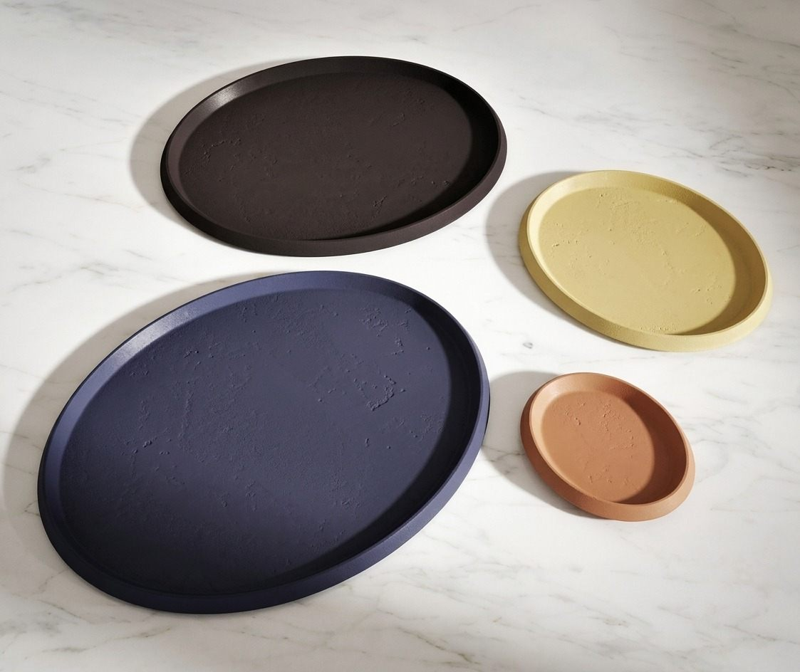
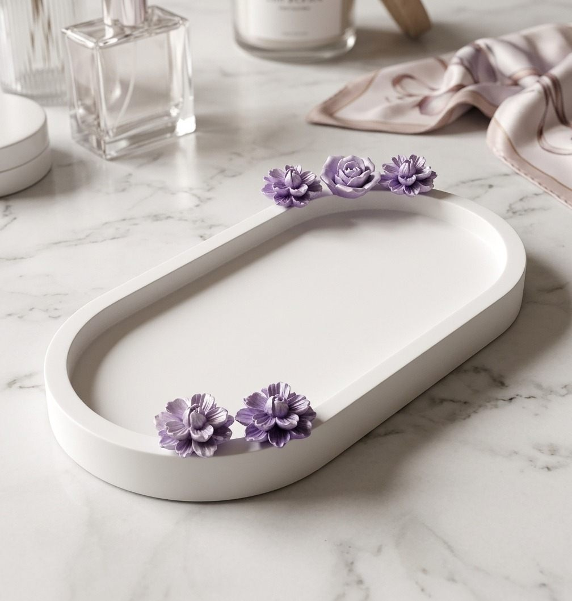

One woman, one kitchen studio, and a shelf of shell moulds. Everything we sell is poured, cured, sanded and wrapped by the same pair of hands.

How it began
A gift for a friend,
that became a studio
Mams Glam started with a single shell-shaped mould and a birthday. The first dish was poured for a friend who kept losing her rings; the second for a sister who wanted somewhere calm to put her earrings at night. Friends asked for their own. Then their friends.
Today the kitchen table has become a small studio, but the rhythm is unchanged: mix, pour, wait a week, sand until silky, seal, and wrap with a handwritten note. If a piece isn't good enough to gift, it doesn't leave the studio.
“Handmade isn't a style. It's a promise that someone cared the whole way through.”
Mams GlamFounder & maker

What we promise
Slow by design
Every piece cures for a full week before it is sanded and sealed. No shortcuts, no rushed batches.
Small batches only
Made to order, a few pieces at a time. It means a short wait — and a piece made just for you.
Kind materials
A low-VOC mineral composite, water-based sealers, and recycled, plastic-free packaging.
Made by hand
Four slow steps, one calm week
Design
Every piece begins as a sketch and a colour study in our palette of chalky, calming tones.
Pour
The mineral mix is poured by hand into moulds — one piece at a time, never rushed.
Cure
A full week on the shelf gives each piece its cool, stone-like weight.
Finish
Sanded silky, sealed, wrapped in tissue and tied — ready for its new home.
Care guide
Made to be lived with
Everyday care
Wipe with a soft, damp cloth and let air-dry. The water-based seal shrugs off coffee rings and ring-fluted keys, but keep perfume, nail polish remover and long-wear foundation off the surface.
What to avoid
- Dishwashers, ovens and open flames
- Standing water — dry trays after use
- Sharp knives on platter surfaces
- Direct sunlight for long stretches, which can gently shift the pigment
Silicone companions
The Heat-Safe Mat and Brush Case are food-grade silicone: rinse in warm soapy water or pop them on the top rack of the dishwasher. They tolerate up to 230 °C.
Bring a quiet piece home
Seven pieces, poured this week, waiting for a corner of your world.
Shop the collection